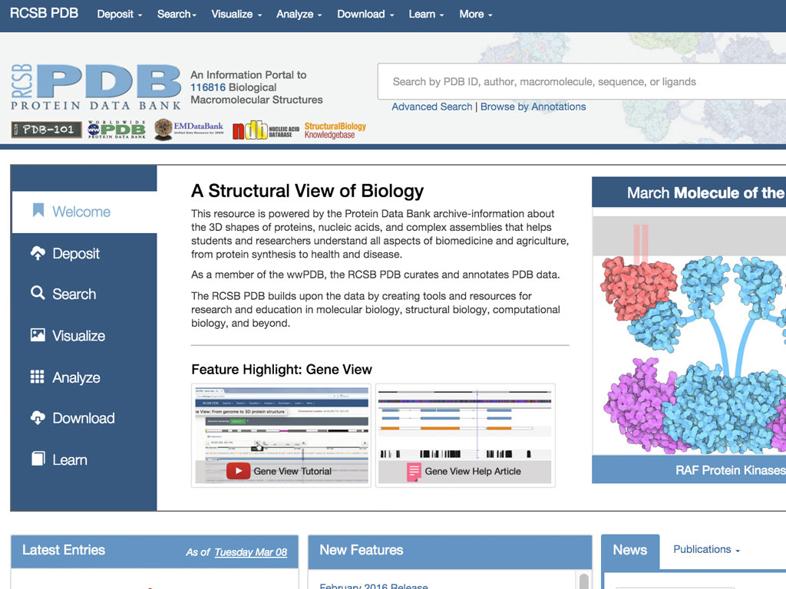
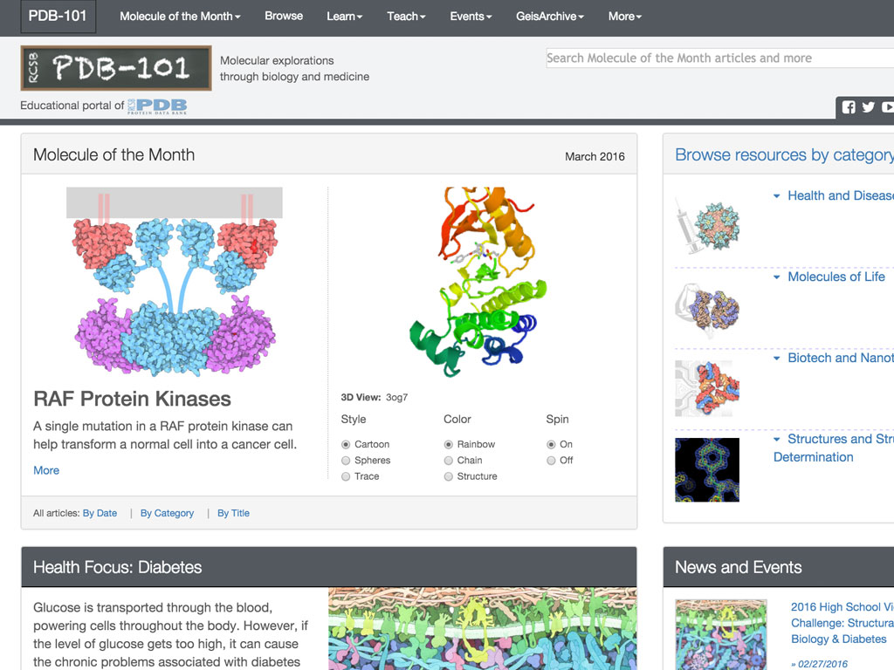
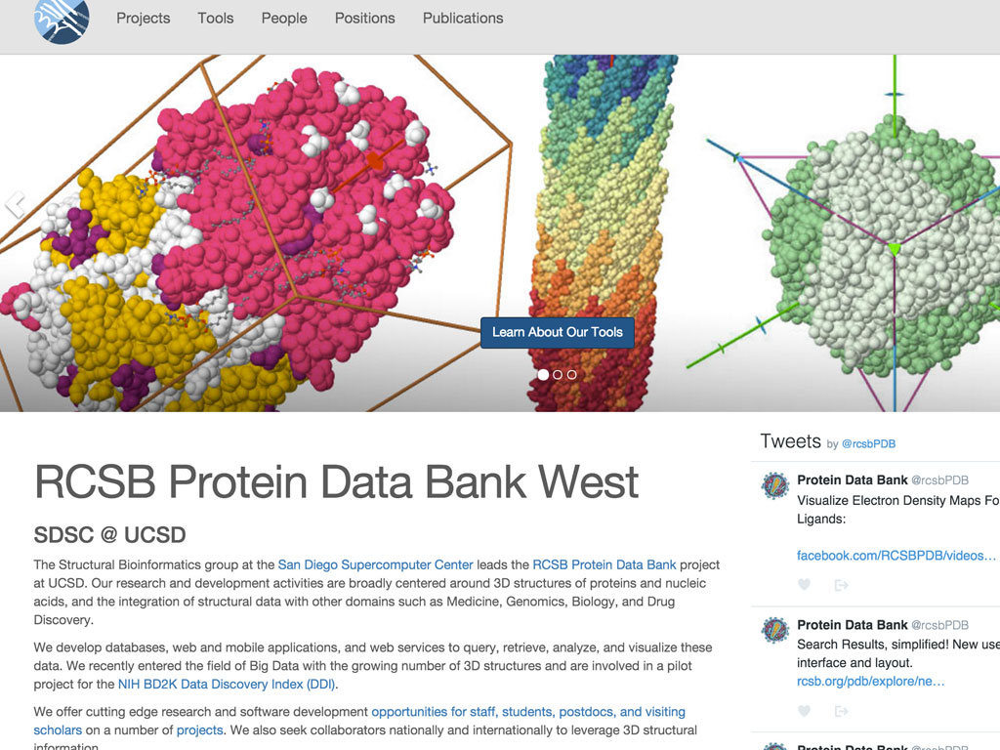
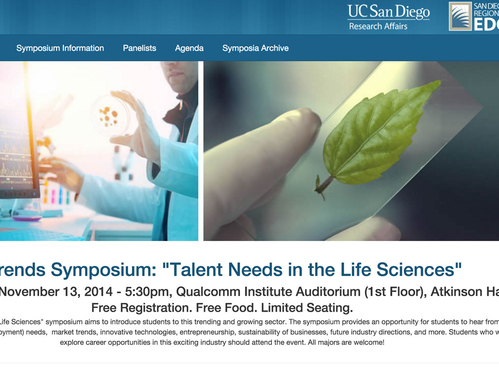
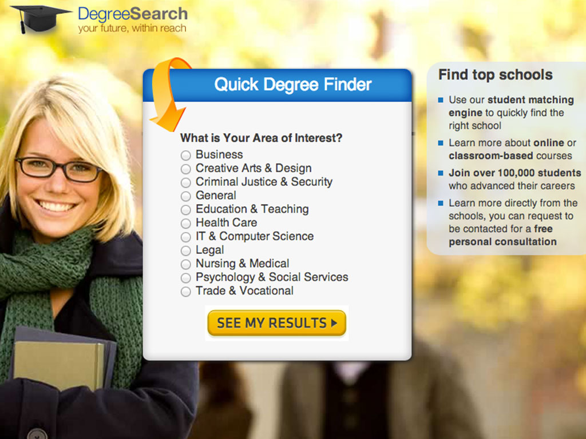
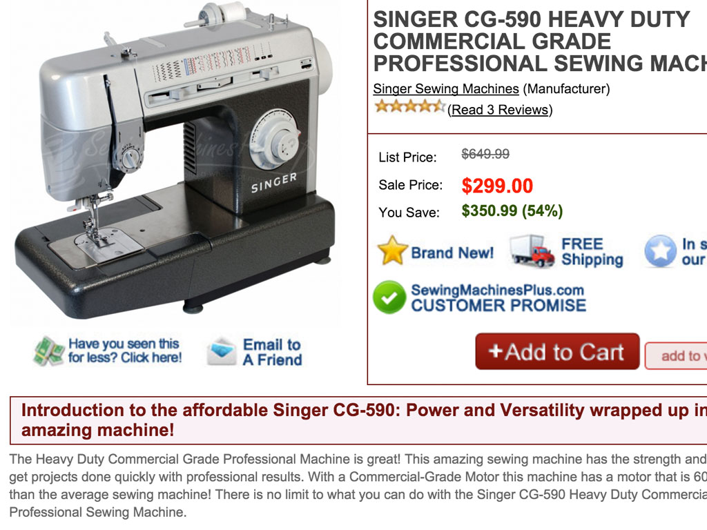
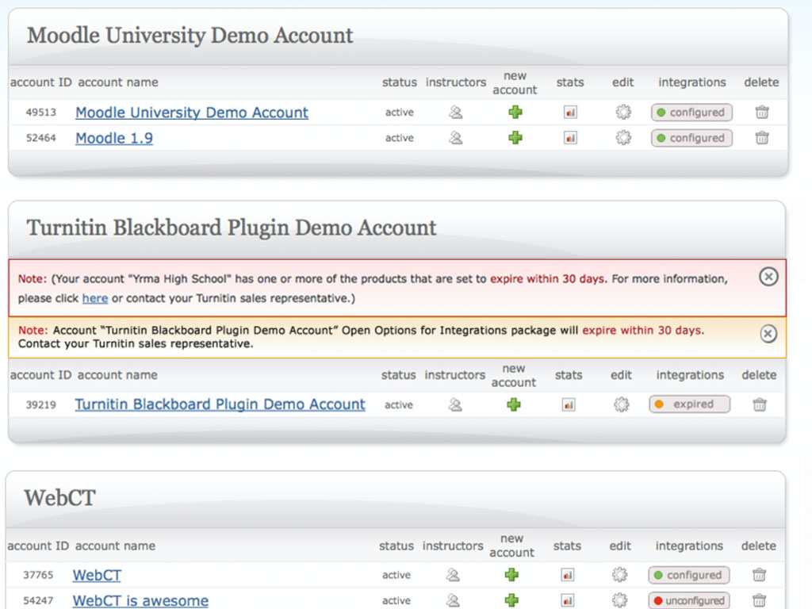
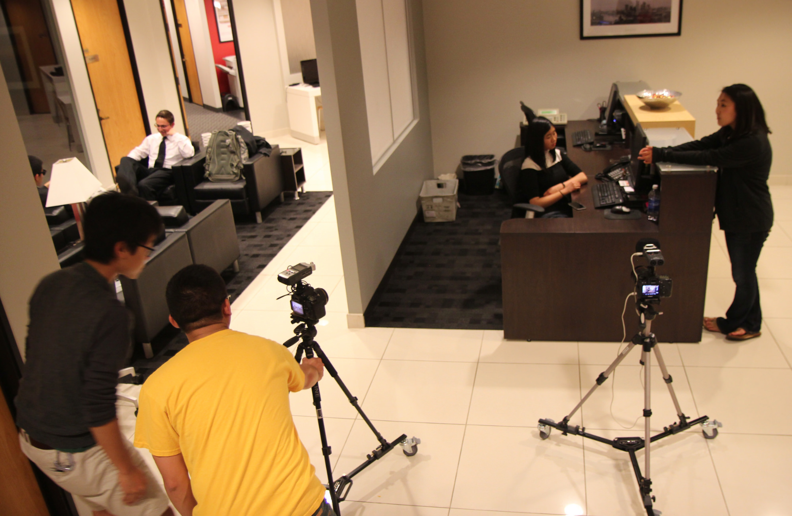
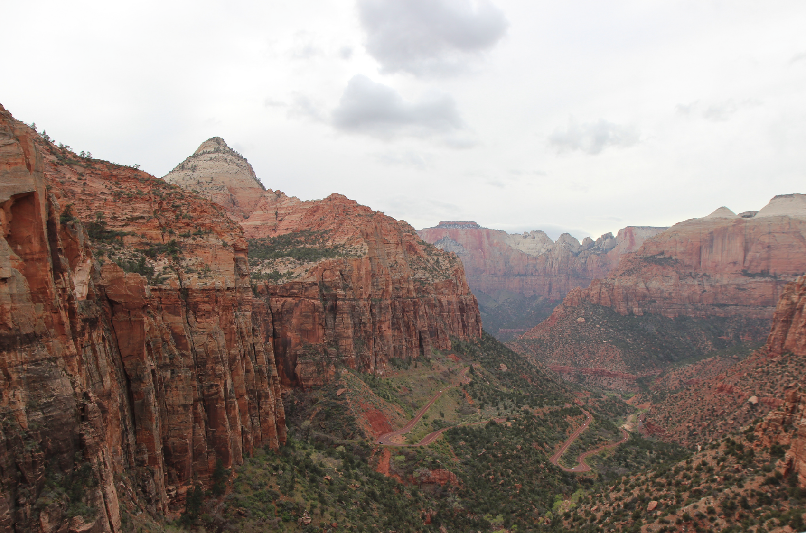

product development is my passion
Seasoned professional responsible for designing, prototyping, developing and maintaining web apps and assets within a fast-paced environment, having a common sense approach towards user experience, and the skills plus experience acquiring targeted traffic and managing online marketing campaigns.
Specialties: Front-end web development, user experience (UX), graphic design, video production, photography, ROI-driven online marketing
After receiving a Bioengineering bachelors and Mechanical Engineering masters at UC Berkeley, I decided to change my career focused to the tech/computer sector, as it was trending in the mid 2000s. Started out as a Quality Assurance tester, transition to being User Interface designer, then learned about Internet Marketing, but I've always had in mind of being a software developer. Over the years, I took on various web development side projects, and now that interest has become my career. I'm currently working full time as a web developer at RCSB PDB.
web development and design
web development, ux designs, graphic design

An NIH/NSF funded resource that archives data on proteins, nucleic acids, and complex biological assemblies

The PDB-101 is an education portal managed by RCSB PDB

Site promoting the Structural Bioinformatics group at the San Diego Supercomputer Center

iTrends (Innovation Trends) symposium exposes UCSD students to innovative industries

Matching potential students to online universities and colleges

An E-commerce site dedicated to selling sewing and quill machines
Search buy or rental textbook deals

Anti-Plagiarism tool used by many universities and high school
in-depth look at one project
In 2013, the entire RCSB PDB team discussed our mission statement of being a premiere scientific site focused on usability and being cutting edge in delivering quality data and advanced tools. Consequently, we came to a consensus that the site needed to be redesigned - starting with the homepage. Not just to keep up with current design trends, but to do the following on the most visited page:
The last point was a road block in the brainstorming phase of the homepage redesign. Was there a solution of making core features and tools accessible to users? Many users complained that they weren't even aware that such tools existed. Eventually after a month of deliberation, in January 2014 with an epiphany, I suggested a two-tier panel section similar in "design" of a vertical navigation with static dropdown menus. After presenting this solution to the leadership team, the site was "green-light" to proceed with code development.
After much discussions, team meetings, whiteboard scribbles, prototyping, and hundred of hours of code development, review and feedback, and testing, the redesigned homepage became a reality.
As the lead front-end developer, I personally took charge of this monumental project, which met expectations and deadlines. Once released, the redesiged RCSB PDB homepage was well received by the scientific communnity and team members. And analytics have shown a considerable lift in using our search tools, which was previously hidden.
With the redesigned framework (style guide, Twitter Bootstrap) set, subsequent pages like the Structure Summary page (2015) and the Search Results page (2016) was given a facelift, information was organized, and various user interactions were tightened down.
The homepage took about 10 months to complete from conception to production. The Structure Summary page was likewise the same. But the Search Results page have shifted over to an agile development cycle with 5 week sprint phases, as I pushed for more and frequent releases similar to how Google or Facebook operates. The paradigm of development has been changing and being transformed.
from LinkedIn over the years
I worked with and managed Jesse during his time at Ampush. Jesse was a hard worker who was an integral part of the media buying team and primarily responsible for building out much of our search and contextual campaign portfolio. He was a true team player who wore many different hats during his time at Ampush, always being flexible with what he worked on to try to help out where he was needed most.
Koby Simantob: manager at Ampush
Jesse is a great team player, willing to contribute in a number of ways, both inside his direct area of job function and outside it. During his time at Ampush, Jesse has been an important contributor, helping the company to scale and grow over 2 years from 15 people to over 55, contributing directly in paid media campaign building and management, as well as in landing page building and optimization.
Michael Darwal: indirect manager at Ampush
I've had the pleasure of working with Jesse over the past year. During that time, he's proven to be a very efficient and multi-talented worker (it's not often that you run into someone who knows how to code and also buy media). Best of all, he's super responsive and very easy to work with. Jesse would be a great asset to any organization.
Alan Chu: directly worked with at Ampush
Jesse was one of the hardest workers I know and one always eager to learn and get better in everything he did. He was always thorough with everything given to him and picked up things very quickly. It was great that he also had a technical background and an eye for good design.
Paul Lee: manager at Leadqual
Jesse is someone you can count to get the job done, and it was a pleasure working with him. He is able to juggle many responsibilities well and produce high-quality work quickly. In addition to being very experienced and knowledgeable concerning web design and search engine marketing, he's very relational and contributes a lot to a positive atmosphere in the workplace. He constantly desires to learn and grow so that he can provide more help and do more for the company.
Joel Letro: indirect manager at Leadqual
It was a pleasure working with Jesse. He was a very hard worker and very quick to reach out for input and feedback. During the year we worked together, I saw Jesse really grow as a designer as well as someone who could take the wants of a client and mold those desires into something that both met the client's wants as well as something that was intuitive for users to use.
Dora Tung: directly worked with at iParadigm (makers of Turnitin)
a sample of videos I've produced
Created an intro video to draw the audience in, stir up interest, to relax and enjoy the theatrical production. Video was inspired by several movies: The Matrix and Bourne Ultimatum
3 nights of planning and equipment gathering, 1 night of filming, 5 nights of editing. Total production time: 1.5 weeks
Equipment: 2x Canon 7D DSLR, Zoom H4nSP mic, dolly, Adobe Premiere

Summarized the hikes at Bryce Canyon / Zion National Park in Utah. Drove 1244 miles roundtrip, starting from San Diego. As the lead of the trip, I took care of the finances and logistical planning. View gallery of photos taken on my Canon Rebel T3i.
Equipment: Canon Rebel T3i DSLR, iMovie

{kind=link}
{kind=link}
{kind=link}
{kind=link}
{kind=link}
{kind=link}
{kind=link}
{kind=link}
{kind=link}
{kind=link}
{kind=link}
{kind=link}
{kind=link}
{kind=link}
{kind=link}